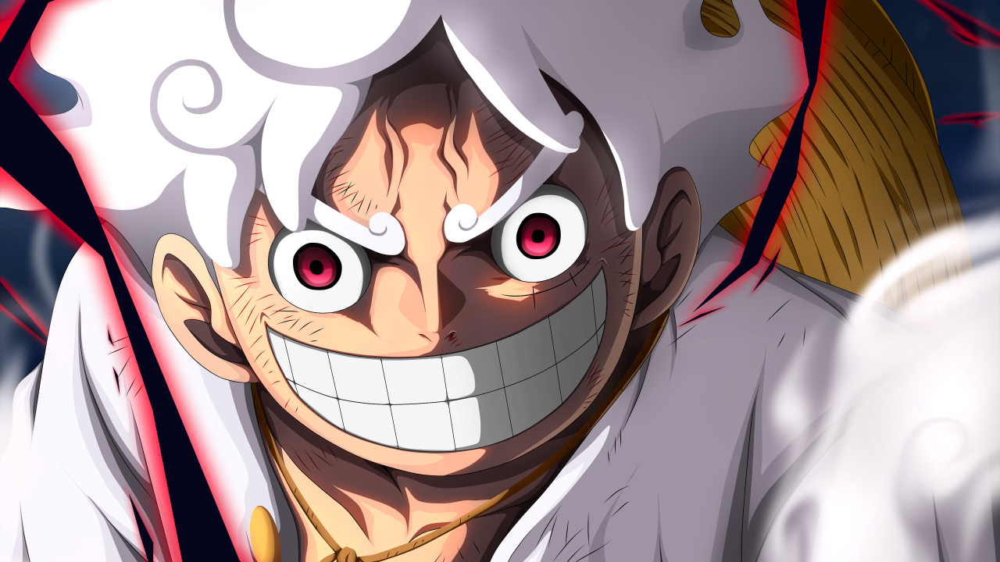
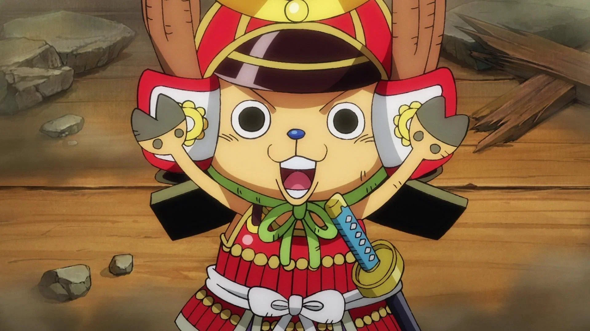

ONEPIECE ANIME

THEME
The story follows the adventures of MONKEY D. LUFFY, A boy whose body gained the properties of rubber after unintentionally eating a Devil Fruit. With his crew, named the Straw Hat pirates,Luffy explores the Grand Line in search of the world's ultimate treasure known as the "One Piece" in order to become the next Pirate King.
PIRATES BOUNTIES
CHARACTERS
MONKEY D. LUFFY

Monkey D. Luffy, commonly known as "Straw Hat Luffy”,is the founder, captain, and strongest combatant of the increasingly infamous and powerful Straw Hat Pirates.He fearlessly pursues the legendary treasure of the late Gol D. Roger in order to become the new Pirate King and reach a further, untold dream (currently known to only his crew and closest friends).He believes that being the Pirate King means having the most freedom in the world.Born on Dawn Island, Luffy is the son of Revolutionary leader Monkey D. Dragon and grandson of the Marine hero Monkey D. Garp and as such is a member of the Clan of D. Most of his childhood was shaped by Garp and Curly Dadan, under whose care he befriended and swore brotherhood to the late Portgas D. "Fire Fist" Ace and Sabo.However, he draws his greatest inspiration from the pirate "Red-Haired" Shanks.
RORONAOA ZORO

Roronoa Zoro, also known as "Pirate Hunter" Zoro, is a main combatant of the Straw Hat Pirates, one of their two swordsmen, one of the Senior Officers of the Straw Hat Grand Fleet, and is publicly recognized as the right-hand man and number two of his crew's captain Monkey D. Luffy. Formerly a bounty hunter, he is the second member of Luffy's crew and the first to join it.
SANJI

"Black Leg" Sanji, born as Vinsmoke Sanji, is the cook of the Straw Hat Pirates and one of the Senior Officers of the Straw Hat Grand Fleet. He is the fifth member of the crew and the fourth to join, doing so at the end of the Baratie Arc. Born as the third son and fourth child of the Vinsmoke Family (thus, making him a former prince of the Germa Kingdom), he disowned his family twice, once in his youth and again after reuniting with them as an adult. After fleeing the Vinsmokes as a child, he eventually entered the care of Zeff as the sous chef of the Baratie, where he would remain until he met Monkey D. Luffy, who convinced him to join his crew.
NAMI

"Cat Burglar" Nami is the navigator of the Straw Hat Pirates and one of the Senior Officers of the Straw Hat Grand Fleet. She is the third member of the crew and the second to join, doing so during the Orange Town Arc. She is the adoptive sister of Nojiko after the two were orphaned and taken in by Bell-mère. She was formerly a member of the Arlong Pirates and initially joined the Straw Hats so that she could rob them in order to buy back her village from Arlong. However, she legitimately joined the Straw Hats after they rebelled against and defeated Arlong. Her dream is to make a map of the entire world.
CHOPPER

Tony Tony Chopper is the doctor of theStraw Hat Pirates.He is the sixth member of the crew and the fifth to join, doing so at the end of the Drum Island Arc. He was temporarily forced to join the Foxy Pirates during the Long Ring Long Land Arc, but was quickly returned to Luffy's crew. Chopper is a reindeer that ate the Hito Hito no Mi, a Devil Fruit that allows its user to transform into a human hybrid at will. He was taught medicine on Drum Island by his two parental figures, Doctors Hiriluk and Kureha. Chopper aims to travel all across the world in the hopes of accomplishing his dream of being able to cure any disease.